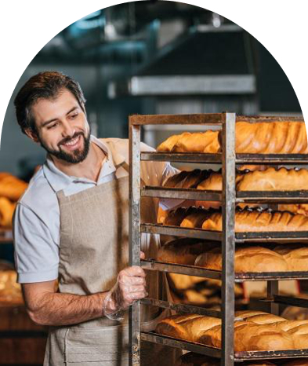

Настя
Привіт, я Настя!
Вже 10 років, я свтілюю у життя цікаві та смачні ідеї.
Я випічу для вас найсмачніщі вироби!

shop bakery — це пекарня, яка взяла все найкраще, і зберегла смак традиційної випічки та натуральність інгредієнтів.
Ми працюємо як найвідоміші мережі — 5 хвилин і замовлення готове. А ще у наших пекарень стильний дизайн та висока якість обслуговування!
Привіт, я Настя!
Вже 10 років, я свтілюю у життя цікаві та смачні ідеї.
Я випічу для вас найсмачніщі вироби!
Привіт, я Влад!
Мій кодитерський стаж вже 18 років. SHOP BEKERY - це наша любов, з якою ми ділимось кожен раз з Вами через нашу випічку!
Я зроблю для вас унікальну начинку на будь який смак!

© 2022 Дані захищені